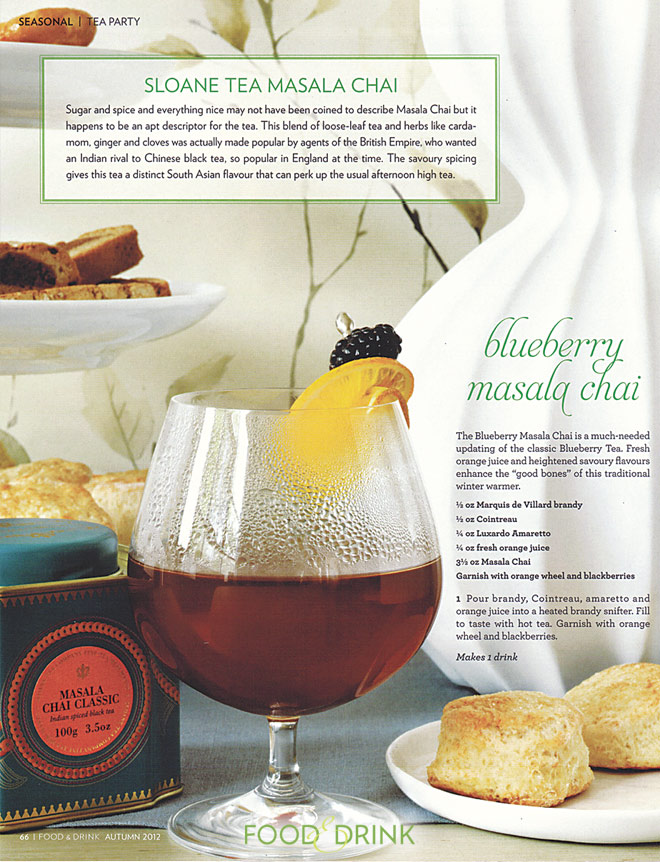

Buyer's Dashboard For Retailers
Abeego
Amalgamated Sope Company
Butter Baked Goods
CB's Nuts
Crazy Rumors
Conceived by Nature
Earthy
Element Botanicals
Endangered Species
Flip and Tumble
Green Tree
Hurraw
Moon Valley Organics
Mouthwatchers
People Towels
Pour Mason
Puremedy
Schmidt's Beauty
Sloane Tea
That's All
Tipu's Authentic Indian Chai
To-Go Ware
True Vibes
Yumbutter
zimt Raw Chocolate



ABOUT SLOANE
The tea in your cup is a result of a delicious journey. At Sloane Tea Company we traverse the world in search of only the finest teas that would delight even the most discerning of palates.The Sloane story is about beauty. Beauty as told through the senses of taste, smell and sight. Beauty as experienced through the remarkable taste of our teas, as well as the beauty of the colour in your cup and the enticing fragrance of our perfumed teas. Sloane’s signature line of teas and tisanes (herbal teas) combine the finest loose leaf teas, exotic ingredients and artisanal techniques.Tea sourced & blended by certified tea sommeliers
Each Sloane Tea is individually sourced. Chosen from hundreds of tea gardens, Sloane Teas are carefully processed using centuries old artisanal techniques. Our scented and blended teas are custom created by our own team of Certified Tea Sommeliers and culinary experts. As part of the development of our products, we have consulted with the Maître Nez (Head Nose) of one of France’s foremost perfumeries and trained at the Studio Des Fragrance in Grasse, France.
Tea continually cupped for quality
To deliver on our promise of an exceptional cup of tea, all Sloane Teas are regularly cupped and assessed by independent Certified Tea Sommeliers, gourmet chefs, culinary instructors and tea industry experts. Their knowledge and comments are passed along to you in our expert tasting reviews. Regular cupping is how we gauge new flushes (harvests) of tea to ensure an exceptional cup of tea.
Tea elegantly presented
Our beautiful Sloane Tea tin caddies are reminiscent of old-world luxury with a new twist – each has been inspired by Sloane tea experiences and travels. Our inspiration? The glimpse of a paisley pashmina shawl in New Delhi’s midnight market…. a gemstone pendant seen in a Darjeeling antique shop… a century old pattern on heirloom fine bone china. The outcome of our travels, studies and tastings? Exceptional tea!

The Sloane Story
The Sloane story is about beauty. Beauty as told through the senses of taste, smell and sight. Beauty as experienced through the remarkable taste of our teas, as well as the beauty of the colour in your cup and the enticing fragrance of our perfumed teas. Sloane’s signature line of teas and tisanes (herbal teas) combine the finest loose leaf teas, exotic ingredients and artisanal techniques.